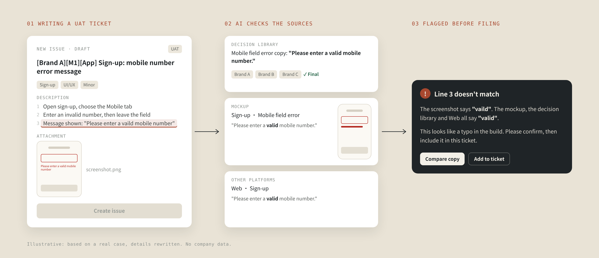

AI 輔助的 UIUX 決策庫
團隊還沒有共用的 AI 工具時，我先用 Notion 和 Claude 替自己建了一個決策庫。每條規則都查得到出處，用來檢查規格、整理 UAT 問題單，也回答 squad 裡反覆被問到的規則。
Background|
背景與問題
2025 年底團隊重新分成 squad，很多成員原本不是做產品出身，對既有規則不熟。每次開會，同一條規則常被問好幾次，而第一個被問的就是設計師。
規則被重複詢問
連 PDM 也常不確定規則，會議時間花在重新確認。
三品牌互相矛盾
同一個欄位，在不同品牌、市場、平台各有一套行為。
決策散落各處
隨機寫在 mockup 或 Jira 單裡，找不到是誰、為什麼定的。
System|
系統怎麼運作
示意圖，依實際結構重新繪製，不含公司內部資料。
一條規則一句話
規則集中・出處可查
一個 Epic＝一波上線
標出品牌特有的規則
同一功能，誰還沒開發
讀取 Notion 的決策頁
回答規則提問
每條決策長這樣
一條規則只寫一句話，再用標籤標出它適用在哪裡、目前狀態，以及依據的出處。被推翻的規則不刪除，標成「已作廢」，保留當初為什麼改的紀錄。
- 品牌・市場・平台・模組・元件
- 狀態：已定案／待確認／已作廢
- 依據：連回 Jira 單與 Figma 畫面
- 迭代記錄和決策雙向連結
欄位錯誤訊息在離開欄位時才顯示，輸入中只做長度上限的靜默截斷。
依據：Jira 單・Figma 畫面（連結）
同一個功能，三個品牌走到哪了？
每條決策都標了品牌，所以決策庫也能反過來看：哪個品牌還沒跟上、哪些規則是某個品牌獨有。以下為示意。
| 功能 | 品牌 A | 品牌 B | 品牌 C |
|---|---|---|---|
| 手機號碼註冊 | 已上線 | 已上線 | 已上線 |
| 切換 tab 時保留欄位 | 待開發 | 已上線 | 已上線 |
| 手機號碼不可重複 | — | — | 品牌特有 |
| 深淺色模式 | — | — | 品牌特有 |
With AI|
AI 在哪裡幫上忙
畫之前先比對
新需求進來時，請 Claude 比對決策庫，提醒哪些規則已經定過、哪些和其他品牌衝突。
開單和抓錯
把 UAT 發現的問題丟給 AI，整理成統一的雙語開單格式。它也曾經抓到我自己沒發現的錯誤。
回答規則提問
PDM 來問規則時，我先問 AI、再對照依據，回覆時直接附上出處，不用再翻聊天紀錄。
我在寫一張 UAT 單時把畫面截圖丟給 AI，它比對決策庫後提醒我：畫面上的一句錯誤訊息和 mockup 不一樣，也和其他平台不同，要我先去確認。結果是工程師把文案打錯了。這種跨文件、跨平台的不一致，人工檢查時很容易漏掉。
Outcome|
成果
Reflection|
反思與下一步
先有結構，AI 才可靠
AI 能準確比對，是因為每條規則都寫成一句話、標好適用範圍。先把散落的資料整理好，比選用哪個 AI 工具更重要。
限制：只有我在用
團隊當時沒有 AI 工具，這套方法只能停在個人實驗。我先在 Recap 分享做法，讓大家知道可以怎麼用。
下一步：加入「待優化」狀態
AC 確認後，開發就很難再調整。這可以理解，每次修改都要多花時間，但當下來不及做的改善，不該就這樣被忘記。我想在決策庫加入「待優化」狀態，把來不及做的改善記下來，等同一個功能再排進 sprint 時，帶著依據提出。
如果團隊導入 AI
如果團隊導入 AI，決策庫可以直接成為共用的知識來源，讓 PDM、工程、QA 都能自己查規則。
An AI-assisted design decision library
Before my team had shared AI tools, I used Notion and Claude to build myself a decision library. Every rule links back to its source, and I use it to check specs, write UAT tickets, and answer the rule questions my squad kept asking.
Background|
The problem
In late 2025 the team reorganized into squads, and many members came from outside product work. In meetings the same rule would be asked about again and again, and designers were the first to be asked.
Rules asked on repeat
Even the PDM was often unsure, so meeting time went to re-confirming.
Brands contradicting
One field behaved differently by brand, market and platform.
Decisions scattered
Buried in mockups or tickets, with no trace of who decided or why.
System|
How it works
A redrawn diagram of the real structure, with no company data.
One rule, one sentence
A single source of truth
One epic = one release
Flags brand-only rules
Who hasn't built it yet
Reads the Notion pages
Rule questions
What a decision looks like
Each rule is one sentence, tagged with where it applies, its status and its source. Overturned rules are never deleted; they are marked "deprecated" so the reason for each change is kept on record.
- Brand, market, platform, module, component
- Status: decided / pending / deprecated
- Source: links back to Jira and Figma
- Two-way links to the iteration log
Field errors appear on blur; while typing, only a silent length cap applies.
Source: Jira ticket, Figma frame (links)
Where is each brand on the same feature?
Every decision is tagged by brand, so the library can be read the other way too: which brand is behind, and which rules belong to one brand only. Illustrative example below.
| Feature | Brand A | Brand B | Brand C |
|---|---|---|---|
| Phone sign-up | Live | Live | Live |
| Keep fields when switching tabs | To build | Live | Live |
| Unique phone numbers | — | — | Brand only |
| Light & dark modes | — | — | Brand only |
With AI|
Where AI helps
Check before drawing
For each new request, Claude checks the library and flags rules already decided or conflicting across brands.
Tickets and catches
UAT findings go to AI and come back as consistent bilingual tickets. It has caught errors I had missed.
Answer rule questions
When the PDM asks about a rule, I ask AI, check the source, and reply with the link instead of digging through chat.
While I was writing a UAT ticket, I gave AI a screenshot of the build. It checked it against the library and flagged that an error message differed from the mockup and from the other platforms, and asked me to confirm. The engineer had mistyped the copy. Inconsistencies across documents and platforms like this are easy to miss by eye.

Outcome|
Outcome
Reflection|
What's next
Structure first, then AI
AI could compare reliably because every rule was one tagged sentence. Getting scattered information organized first mattered more than which AI tool I used.
The limit: only I used it
Without team AI tools, it stayed a personal experiment. I shared the approach at recaps so others could see how to use it.
Next: a "to improve" status
Once an AC is signed off, development rarely changes course. That is fair, since every change costs time, but improvements we could not fit in at the time should not be forgotten. I want to add a "to improve" status to the library, so improvements we could not fit in are logged and can be raised, with reasoning, the next time that feature enters a sprint.
If the team adopts AI
With team-wide AI, the library could become a shared source where PDM, engineering and QA look up rules themselves.